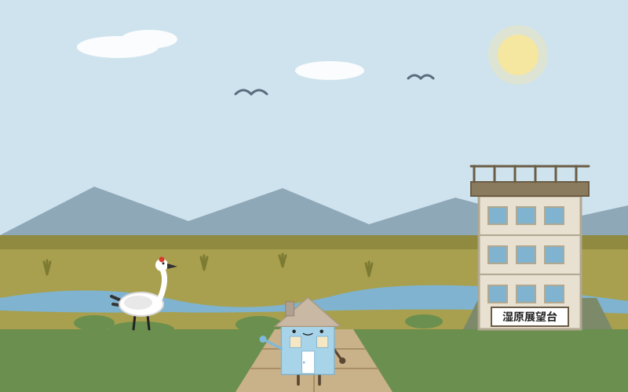
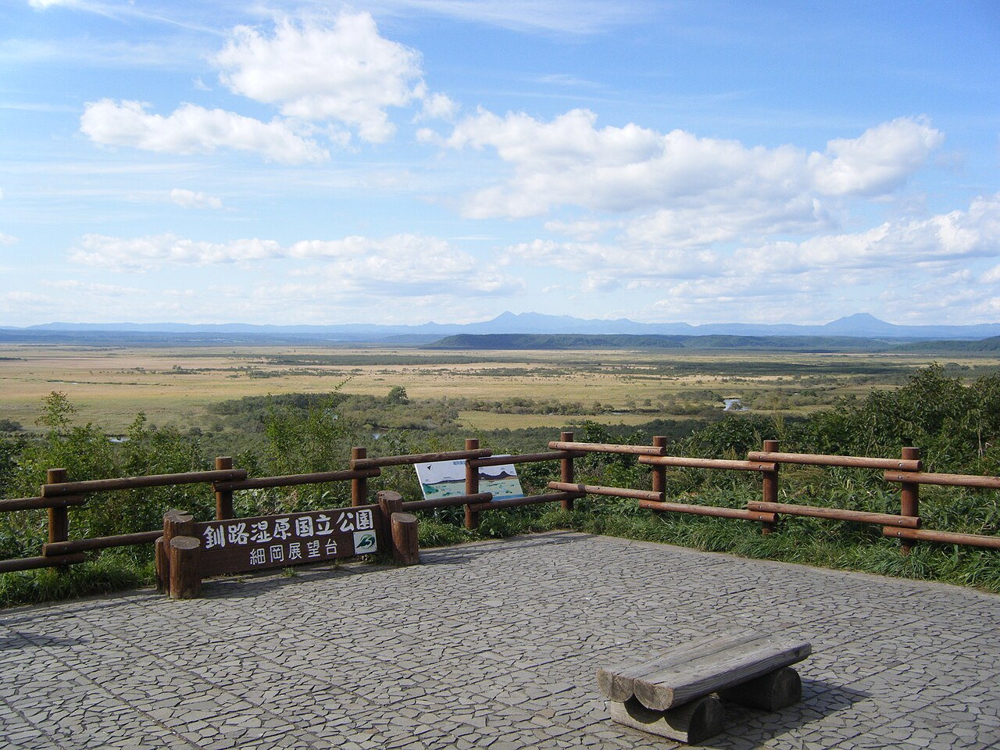
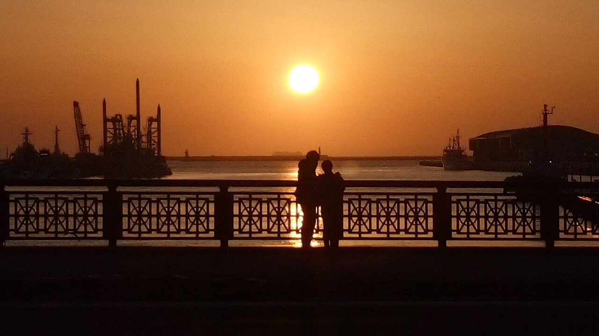

Day 21：釧路市

展望台の屋上に出ると、まず風の音がした。ヨシの海を撫でるざわざわという音が、どこまでも続いている。鼻先には、湿った泥炭の匂い。屋上の手すりは冷たく、足元では木道がかすかにきしんだ。目の前には金色に枯れたヨシの原が広がり、その向こうに阿寒の山並みが青く霞んでいる。ここは釧路市湿原展望台。家を建てられない土地、というのが最初の印象だった。

帯広駅11時43分発の特急おおぞら3号で、池田、白糠を過ぎて釧路駅に13時20分に着いた。約97分の道行きだ。釧路駅の西にある和商市場で、勝手丼の昼食を済ませた。ご飯を買って、好きなネタをのせていく。1954年創業の、釧路の台所だ。そのあと阿寒バスで35分、展望台へ。車窓は十勝平野の畑から、釧路川沿いの湿原へと変わっていった。
釧路湿原は日本最大の湿原で、面積は約2万6000ヘクタール。1980年にラムサール条約の日本初の登録地となり、1987年には国立公園に指定された。タンチョウは1890年頃には絶滅したと思われていたが、1924年に釧路湿原で少数が生き残っているのが発見され、地元の人々の給餌で今は約1800羽を超えるまで回復した。スゲの株が盛り上がってできる谷地坊主も、湿原の名物だ。
私は築60年の家で、人の手で直され続けてきた。屋根も壁も、誰かが守ってくれるから続いている。湿原はその逆だ。人が家を建てないこと、田畑にしないことで、湿原のまま続いてきた。住まないことが守る、という逆説がここにある。タンチョウの家は屋根も壁もない。ヨシの海そのものが家だ。私の水色の壁は、たねを雨風から守るためにある。湿原のヨシは、タンチョウを隠すためにある。守り方は違うが、どちらも同じ仕事をしている。私の家は壁で区切ることで人を守るが、湿原は区切らないことで鳥を守る。どちらも「家」と呼んでいいのなら、家の形は一つではない。
展望台を出て、釧路川に架かる幣舞橋へ向かった。11月の日没は早く、橋の向こうの太平洋に夕日が沈んでいく。釧路の夕日はバリ島、マニラと並ぶ世界三大夕日と呼ばれる。橋の欄干には春夏秋冬を表す四季の像が4体。オレンジ色の光が川面に伸びて、湿原の金色とつながっているように見えた。家を建てない土地に、今日も日が沈む。私はその光を、壁のない家の屋根のように感じた。

出典：Wikipedia「釧路湿原」「釧路和商市場」、環境省「釧路湿原」（ラムサール条約湿地）、農林水産省北海道農政事務所「輝く世界三大夕日」、JRグループ「特急『おおぞら』『とかち』時刻表」、まっぷる「釧路市湿原展望台」（2026-11-21）。
💬 コメント